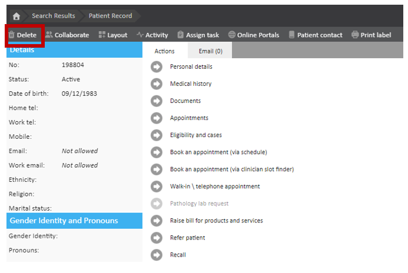
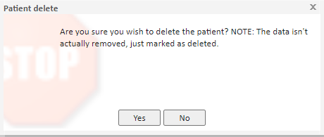
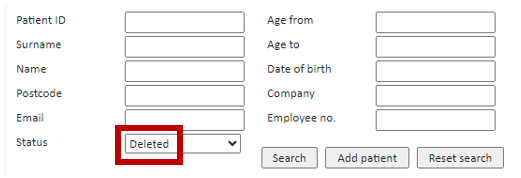
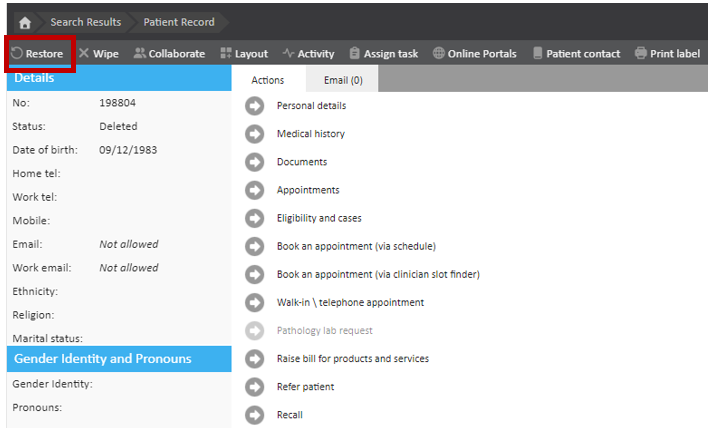
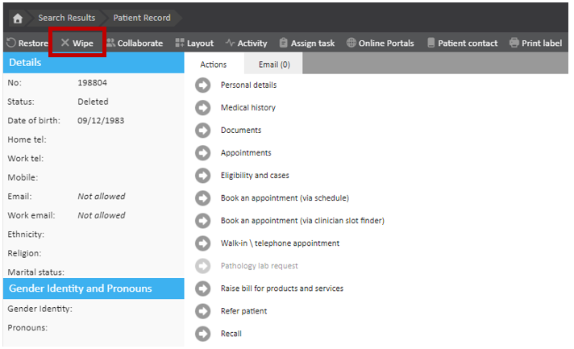
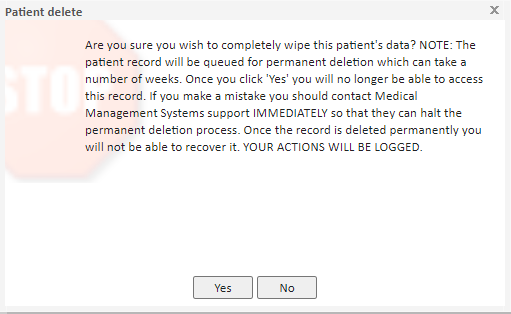

This article will take you through the steps you would need to take in order to change the status of a patient from 'Active' to 'Deleted'. It will also go through the stapes to 'Wipe' a patient from your chamber.
Once a patient is 'Wiped' from your chamber, this is irreversible and should only be used when necessary.
This article is split into three sections:
To delete a patient you will first need to find the relevant patient by navigating Start Page > Find a Patient.
Once you have navigated to the patient page, at the top left, underneath the breadcrumb trail, you will find the 'Delete' button.

Once you have clicked on the 'Delete' button the following pop up will appear asking you to confirm you wish to delete the patient:

Click 'Yes' to confirm you would like to change the status of the patient to 'Deleted'.
The status of the patient will now be changed to 'Deleted'.
This action will only change the status of the patient. To permanently delete/ wipe the patient from your chamber please follow the steps in Wiping a Patient.
If you have deleted a patient in error, or you need to change the status of the patient back to active this can be done by following these steps.
You will first need to find the patient by using the 'Find a Patient' function. Start Page > Find a patient.
When searching for a patient to restore, you will need to ensure the 'Status' field is set to 'Deleted'.

Once you have selected the relevant patient the 'Restore' button can be found at the top left of the screen, underneath the breadcrumb trail.

Once you have clicked on this, the patient's status will be changed back to 'Active'.
If a patient was created in error, Meddbase allows users to 'Wipe' patients from their chamber.
Once a patient has been wiped this is irreversible and all the patient data is lost. If you do perform this action accidentally, please contact a member of the Meddbase technical support team immediately.
Only patients that have their status changed to 'Deleted' can be wiped from Meddbase. For steps on how to do this refer to Deleting a Patient above.
Once a patient has had their status changed to 'Deleted' the 'Wipe' button will appear at the top left of the patient home page.

Once you have clicked on 'Wipe' on the patient home page the following message will appear:

Read through this message and click 'Yes' if you are sure you would like to 'Wipe' this patient.